Druckoptionen der Bon-Typen: Referenz
Legt je Bon-Typ fest, welche Bestandteile auf dem Kundenbon gedruckt werden. Die Optionen stehen im CentralPoint am Bon-Typ (Kassendaten → Bon-Typen, Bereich Druck) und wirken nur, wenn Druck überschreiben gesetzt ist.
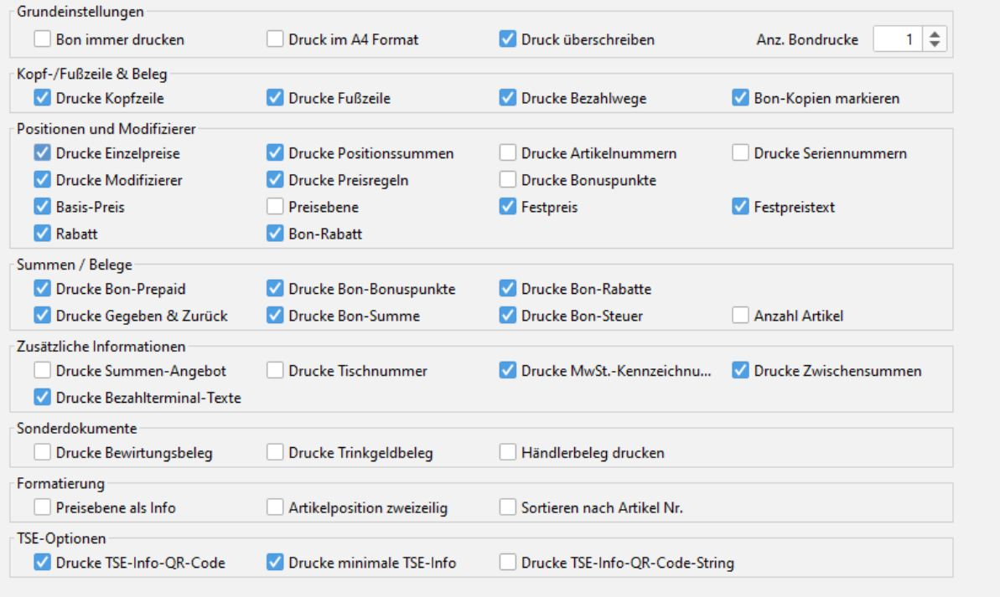
Die Bilder stammen von einer Testkasse (ITR Kasse 5.54). Gedruckt wurde ein Nachdruck desselben Bons aus dem Bon-Browser, daher steht im Kopf BON KOPIE. Über jedem Bild steht der Zustand der Option, rot markiert ist der Unterschied.
Ausgangsbon
Grundlage aller Vergleiche: 2 × Wasser, 1 × Brot mit dem Modifizierer MHD 10%, 1 × Cola mit dem Modifizierer Mitarbeiterrabatt 20%, bar bezahlt mit 20,00 €. Beide Modifizierer greifen über eine Preisregel. Hinterlegt sind außerdem ein Fußzeilentext und die MwSt.-Kürzel A (19 %) und B (7 %).
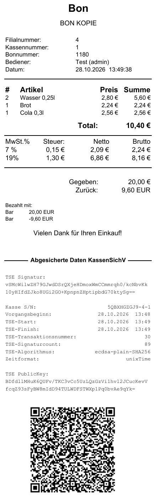
Grundeinstellungen
| Option | Wirkung |
|---|---|
| Druck überschreiben | An: Die Druckoptionen dieses Bon-Typs überschreiben die Druckeinstellungen der Kasse. Aus: Die Druckoptionen des Bon-Typs werden ignoriert; Kopf, Fuß, Positionen, Summen, Bezahlwege und Terminaltexte werden immer gedruckt, TSE-Optionen, MwSt.-Kennzeichnung, zweizeilige Positionen, Anzahl Artikel und Sonderdokumente kommen aus den Druckeinstellungen der Kasse. |
| Bon immer drucken | Druckt den Bon auch dann, wenn der Bondruck an der Kasse über die Druckeraktivierung vorübergehend ausgeschaltet ist. |
| Anz. Bondrucke | Anzahl der Ausdrucke je Bon. Mit 2 kamen im Test zwei identische Ausdrucke. |
| Druck im A4 Format | Der Bon wird nicht auf dem Bondrucker ausgegeben. Im Test kam kein Ausdruck. |
Druck überschreiben (Bon-Typ ohne Kopfzeile, Bezahlwege und TSE-QR-Code, mit MwSt.-Kennzeichnung)
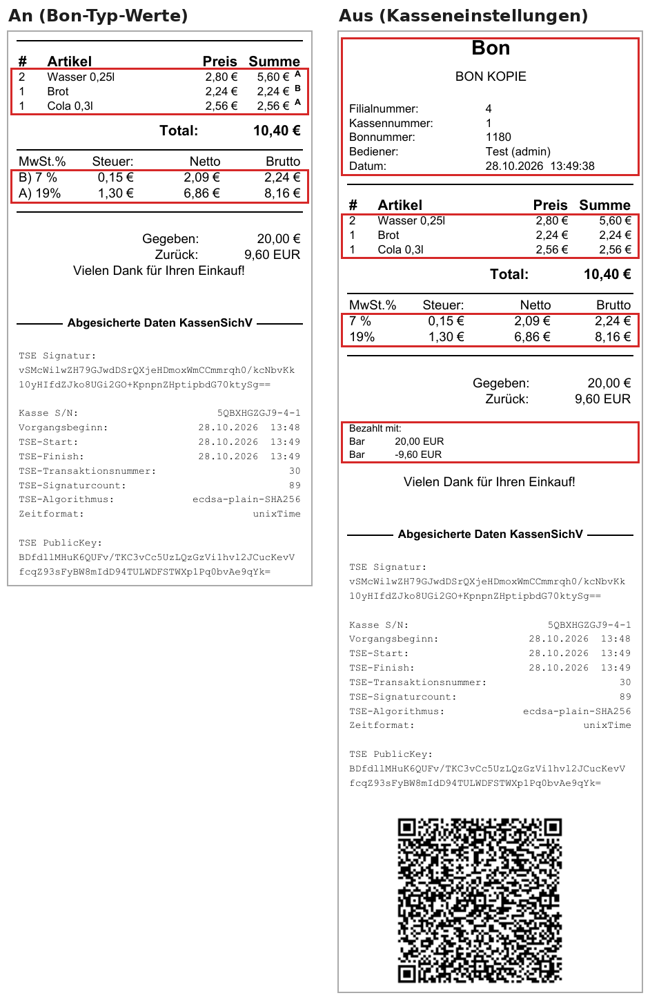
Kopf, Fuß und Beleg
| Option | Wirkung |
|---|---|
| Drucke Kopfzeile | Block mit Bon-Typ-Name, Filial-, Kassen- und Bonnummer, Bediener und Datum |
| Drucke Fußzeile | Fußzeilentext der Filiale unter dem Bon, im Test „Vielen Dank für Ihren Einkauf!“. Der Text wird in den Druckeinstellungen der Kasse gepflegt. |
| Drucke Bezahlwege | Block Bezahlt mit mit Zahlart und Betrag |
| Bon-Kopien markieren | Im Test ohne sichtbare Wirkung: Ein Nachdruck trägt immer BON KOPIE, der zweite Ausdruck bei Anz. Bondrucke = 2 keine Markierung. |
Drucke Kopfzeile
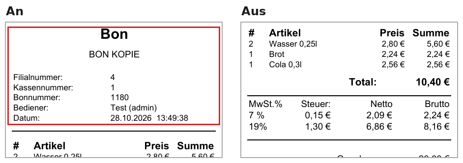
Drucke Fußzeile
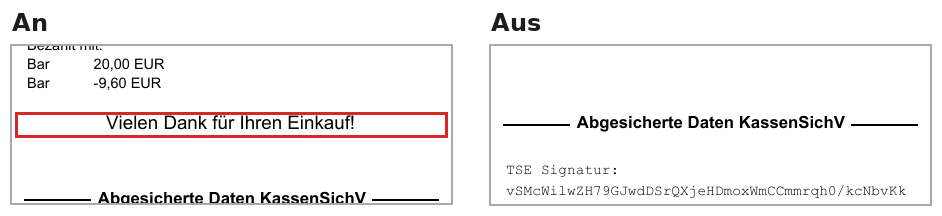
Drucke Bezahlwege
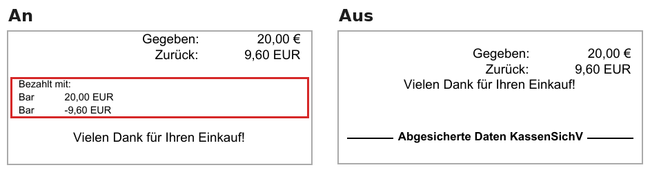
Positionen und Modifizierer
| Option | Wirkung |
|---|---|
| Drucke Einzelpreise | Aus: Preis- und Summenwerte der Positionen entfallen, nur Menge und Artikel bleiben |
| Drucke Positionssummen | Aus: Spalte Summe der Positionen entfällt, der Einzelpreis bleibt |
| Drucke Artikelnummern | Artikelnummer in Klammern unter jeder Position |
| Drucke Seriennummern | Seriennummer unter der Position. Testartikel ohne Seriennummer, daher kein Unterschied. |
| Drucke Modifizierer | Name des angewendeten Modifizierers unter der Position (im Test * MHD 10%, * Mitarbeiterrabatt 20%). Voraussetzung für die folgenden Unteroptionen. |
| Rabatt | mit Drucke Modifizierer: Zeile Rabatt pro Stück mit Berechnung und Rabattsumme je Position |
| Basis-Preis | mit Drucke Modifizierer: Zeile Basispreis (ursprünglicher Preis) je rabattierter Position |
| Preisebene | mit Drucke Modifizierer: Nummer der Preisebene unter jeder Position |
| Festpreis, Festpreistext, Bon-Rabatt | Im Test ohne Festpreis bzw. Bon-Rabatt, daher kein Unterschied |
| Drucke Preisregeln | Name der angewendeten Preisregel unter der Position (im Test * MHD 10%, * Mitarbeiterrabatt 20%) |
| Drucke Bonuspunkte | Bonuspunkte je Position. Test ohne Kunde, daher kein Unterschied. |
Drucke Einzelpreise
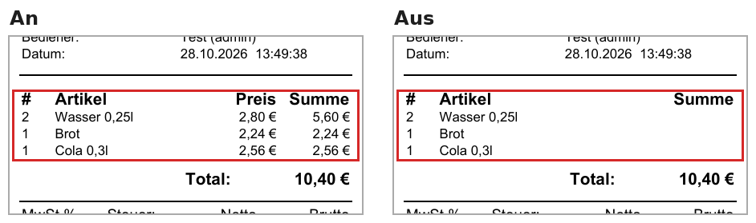
Drucke Positionssummen
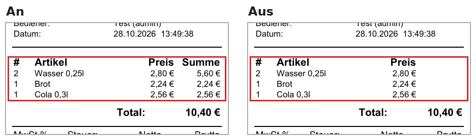
Drucke Artikelnummern
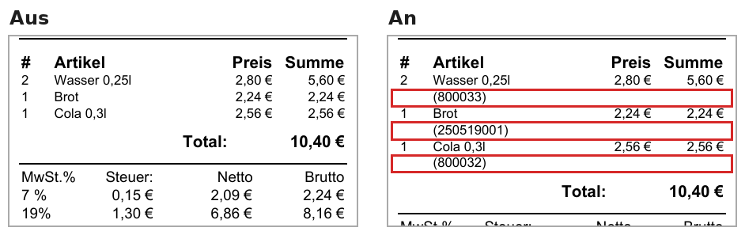
Drucke Modifizierer
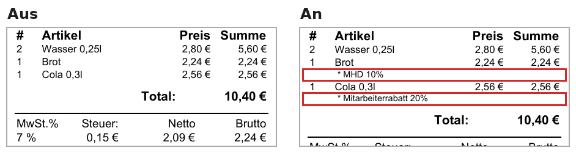
Drucke Modifizierer + Rabatt
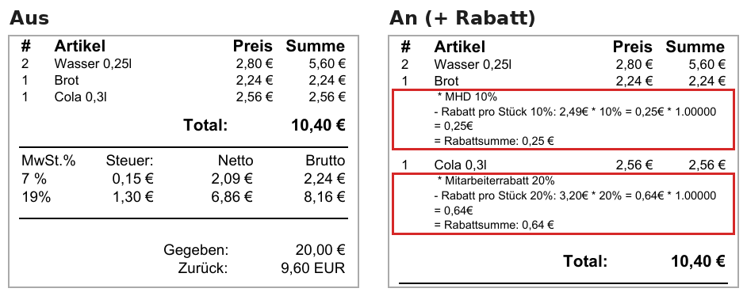
Drucke Modifizierer + Basis-Preis
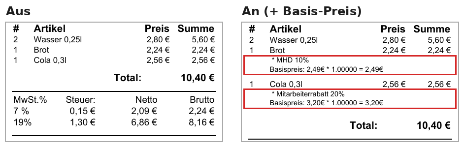
Drucke Modifizierer + Preisebene
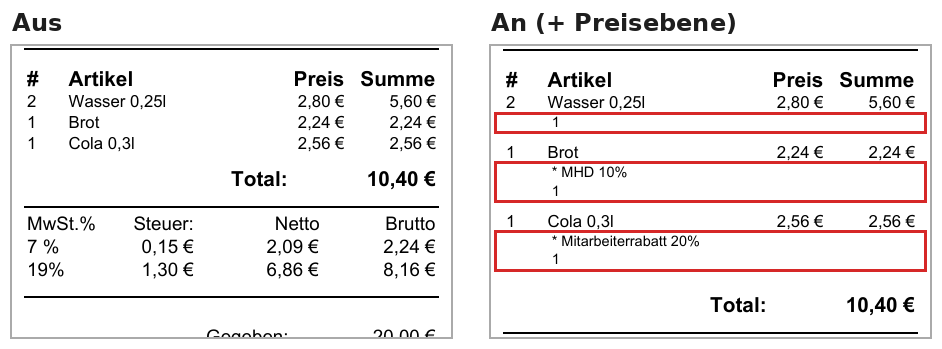
Drucke Preisregeln
Summen und Belege
| Option | Wirkung |
|---|---|
| Drucke Bon-Summe | Zeile Total |
| Drucke Bon-Steuer | Steuertabelle mit Satz, Steuer, Netto, Brutto |
| Drucke Gegeben & Zurück | Zeilen Gegeben und Zurück |
| Anzahl Artikel | Zeile Anzahl Artikelposten mit der Summe der Mengen (im Test 4) |
| Drucke Bon-Rabatte | Rabatte auf den ganzen Bon. Test ohne Bon-Rabatt, daher kein Unterschied. |
| Drucke Bon-Prepaid, Drucke Bon-Bonuspunkte | Prepaid- bzw. Bonuspunkte-Angaben. Test ohne Prepaid und Kunde, daher kein Unterschied. |
Drucke Bon-Summe
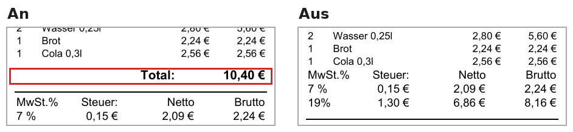
Drucke Bon-Steuer
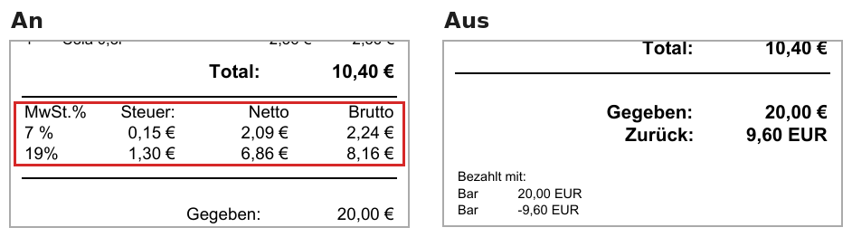
Drucke Gegeben & Zurück
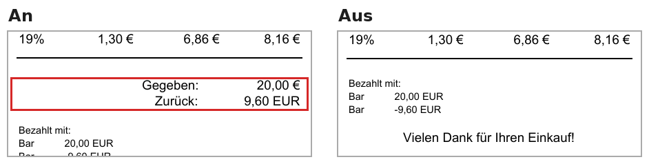
Anzahl Artikel
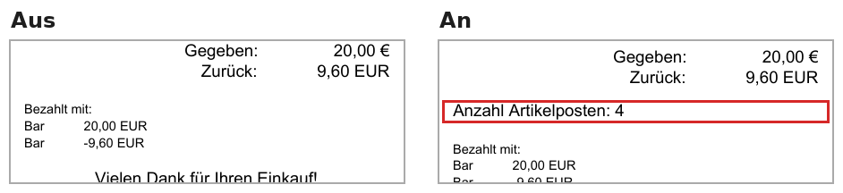
Zusätzliche Informationen
| Option | Wirkung |
|---|---|
| Drucke Zwischensummen | Zeile ZWISCHENSUMME nach den Positionen |
| Drucke MwSt.-Kennzeichnung | Kürzel des Steuersatzes klein neben jeder Positionssumme und vor dem Steuersatz in der Steuertabelle. Voraussetzung: Am Steuersatz ist ein Kürzel hinterlegt. |
| Drucke Summen-Angebot | Angebotstext aus den Druckeinstellungen der Kasse, ab einer dort festgelegten Bonsumme. Im Test nicht eingerichtet, daher kein Unterschied. |
| Drucke Tischnummer | Tischnummer des Bons. Test ohne Tisch, daher kein Unterschied. |
| Drucke Bezahlterminal-Texte | Belegtexte des Kartenterminals. Test mit Barzahlung, daher kein Unterschied. |
Drucke Zwischensummen
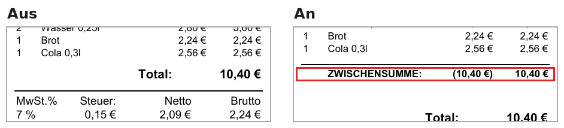
Drucke MwSt.-Kennzeichnung
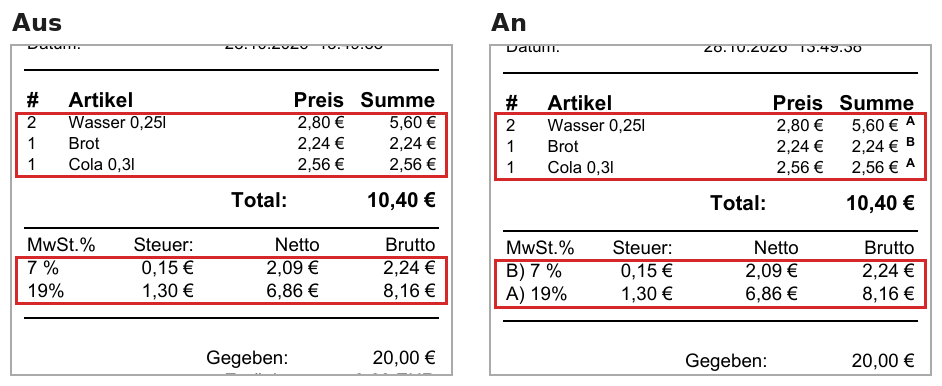
Sonderdokumente
| Option | Wirkung |
|---|---|
| Drucke Bewirtungsbeleg | Formular für Bewirtungsaufwendungen (Tag, Ort, bewirtete Personen, Anlass, Unterschrift) unter dem Bon |
| Drucke Trinkgeldbeleg | Felder TIP, TOTAL, Name, Zimmernummer, Unterschrift unter dem Bon |
| Händlerbeleg drucken | Test mit Barzahlung ohne Kartenterminal, daher kein Unterschied |
Ausdruck eines neuen Bons mit beiden Optionen:
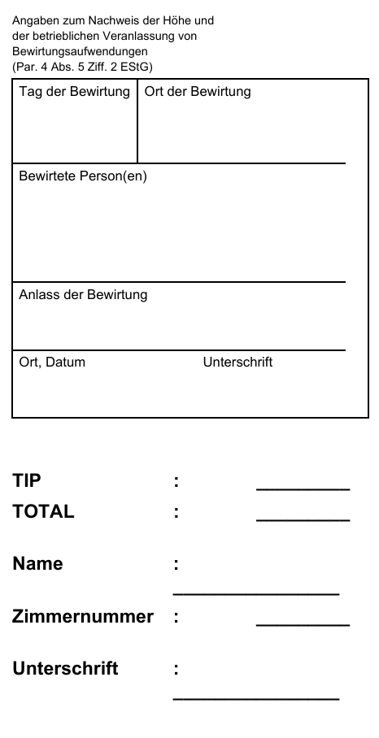
Formatierung
| Option | Wirkung |
|---|---|
| Preisebene als Info | Nummer der Preisebene am Ende jeder Positionszeile |
| Artikelposition zweizeilig | Je Position zwei Zeilen: Menge × Einzelpreis, darunter Artikel und Summe; die Spaltenüberschrift entfällt |
| Sortieren nach Artikel Nr. | Positionen nach Artikelnummer sortiert. Testbon war bereits sortiert, daher kein Unterschied. |
Preisebene als Info
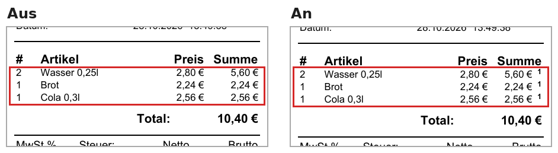
Artikelposition zweizeilig
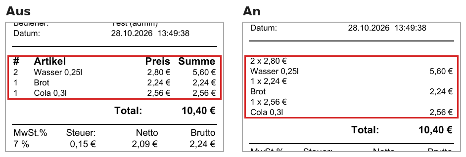
TSE-Optionen
| Option | Wirkung |
|---|---|
| Drucke TSE-Info-QR-Code | QR-Code mit den Daten der technischen Sicherheitseinrichtung (TSE) am Bonende |
| Drucke minimale TSE-Info | Der TSE-Textblock (Signatur, Seriennummer, Zeiten, Zähler, Public Key) entfällt, es bleibt der QR-Code |
| Drucke TSE-Info-QR-Code-String | Inhalt des QR-Codes zusätzlich als Klartext unter Abgesicherte Daten |
Drucke TSE-Info-QR-Code
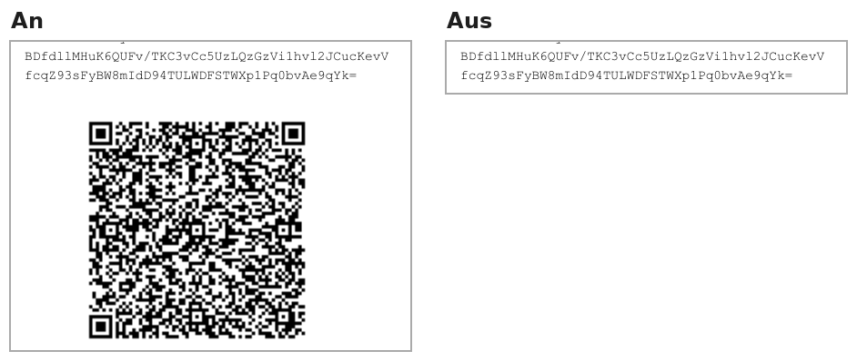
Drucke minimale TSE-Info
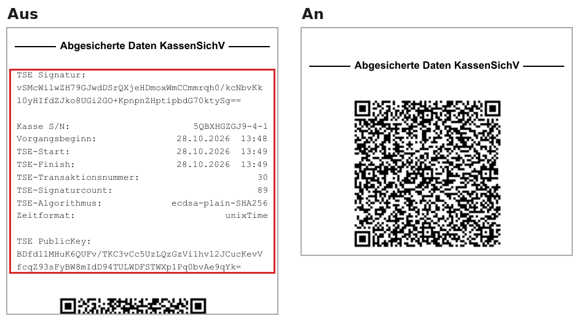
Drucke TSE-Info-QR-Code-String
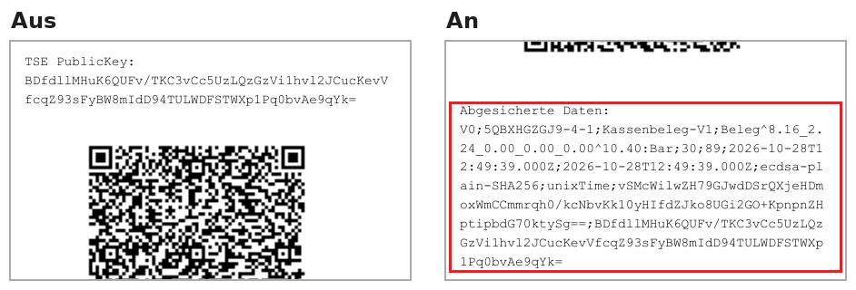
Zu beachten
- Die Kasse übernimmt geänderte Druckoptionen erst, wenn sie die Stammdaten aus dem CentralPoint geladen hat. Im Test wirkte die Änderung zuverlässig nach einem Neustart der Kasse. ITR POS Partner → Produkte → ITR Kasse → Daten von Hand synchronisieren
- Die Abholnummer für den Küchenmonitor hängt nicht von diesen Optionen ab: ITR POS Partner → Produkte → POS Küchenmonitor → Abholnummer auf dem Kundenbeleg
- Die Druckoptionen gelten auch für Nachdrucke aus dem Bon-Browser: Ein Nachdruck zeigt den Bon mit den aktuellen Einstellungen, nicht mit denen zum Zeitpunkt des Verkaufs.